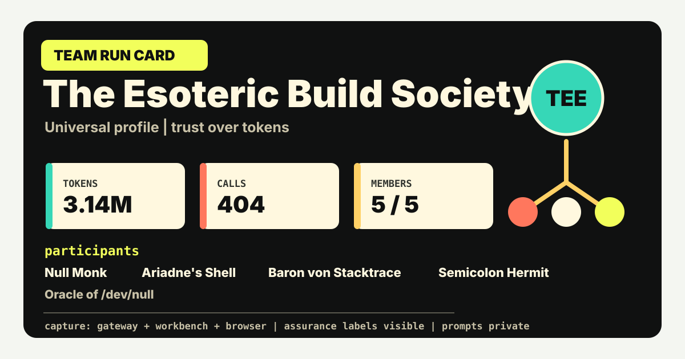
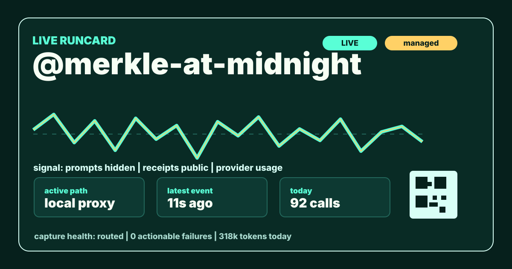

Team card
Aggregates members, captured events, token stats, capture methods, assurance labels, and proof links for judging.
LLM Attested
Runcard turns LLM-related actions into signed receipts. The public card says what was captured, how it was captured, what counted as evidence, and where the verifier can fetch the proof.
It does not claim magic. A card proves a stream of captured events. It does not prove that no other model, account, browser, phone, or laptop was used.


public surfaces
Hackathons are judged by team. Daily proof is shown by individuals. The data model supports both without changing capture infrastructure.
Aggregates members, captured events, token stats, capture methods, assurance labels, and proof links for judging.
Tracks one participant or agent session. It is suitable for a profile README because it is a plain SVG with embedded metadata.
capture sources
Each capture source writes the same signed event envelope. The card labels the source and assurance instead of flattening everything into "verified."
Infrastructure: OpenAI-compatible gateway, event signer, event sink, TEE quote verifier.
Trust: Strong for calls routed through the measured gateway.
Implication: Good for strict events. It still cannot prove out-of-band non-use.
Infrastructure: Local OpenAI-compatible proxy near Ollama, LM Studio, oMLX, vLLM, or llama.cpp.
Trust: Participant controlled unless run inside a managed or attested environment.
Implication: Useful for local-model visibility. Not hard anti-cheat by itself.
Infrastructure: Extension plus local capture daemon. The daemon signs and forwards events.
Trust: Desktop browser extensions are participant controlled.
Implication: Good activity signal. Do not score it like an enforced gateway.
Infrastructure: One binary launches the agent, injects env vars, and records session events.
Trust: Proves the wrapper ran. LLM calls still need gateway or proxy capture.
Implication: Low-friction onboarding. Best as glue, not the only evidence source.
Infrastructure: Managed workspace, controlled credentials, capture defaults, and limited escape hatches.
Trust: Stronger than participant-local tools, weaker than a quoted TEE boundary.
Implication: Good middle tier for events that need fairness without forcing every workflow through one model.
Infrastructure: Confidential VM or enclave, quote collection, signed capture stack, remote verifier.
Trust: Strong for the measured workspace and the hooks it actually runs.
Implication: Highest assurance path. Still state what is observed; do not imply omniscience.
Infrastructure: Retrospective proof import from provider web or API evidence.
Trust: Can support what was shown in that account or session.
Implication: Mercy lane and audit tool. It cannot prove absence across other accounts.
Infrastructure: CLI or daemon accepts a report and emits the same signed event envelope.
Trust: Self reported unless backed by separate evidence.
Implication: Keeps late teams from falling out of the event. Label it plainly.
infrastructure
Capture sources differ. The backend should not. Everything becomes a
signed ContestEvent, stored in an append-only event log,
then rendered into cards and proof documents.
Creates events, team payloads, join URLs, dashboards, runcards, SVGs, and proof endpoints.
Starts the local companion, probes the machine, selects a capture path, and wraps agent commands.
Gateway, local proxy, browser, workbench, TEE workspace, TLS notary, and manual import all emit the same envelope.
Cards link to JSON, receipts, credential documents, and event log roots. SVGs embed compact metadata.
trust assumptions
current path
llmattest start --team-payload team.json -- <agent command>The same event can also run as a hosted service or a self-hosted service inside a TEE. The page labels the difference; the verifier checks the receipt chain.
repo map